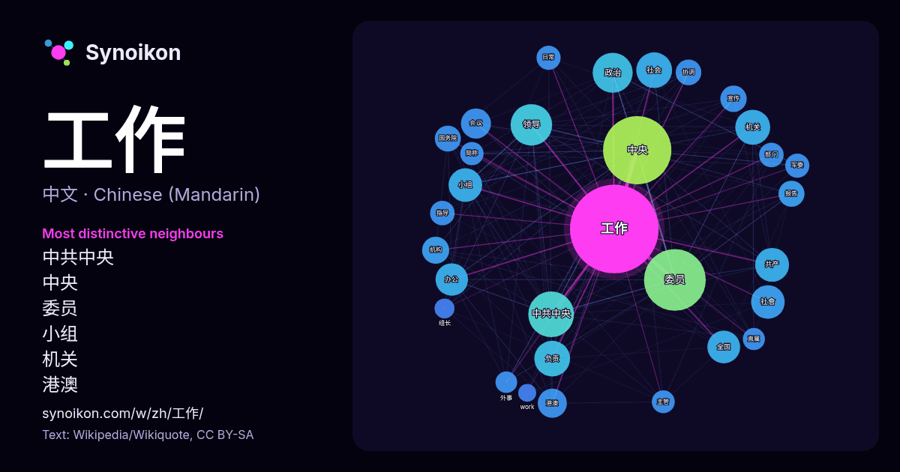

中文 · 热门词
工作
“work” · 来自维基百科, Wikiquote 2095 次出现中其周围的词。

最具特色的邻近词
- 中共中央 74×
- 中央 53×
- 委员 44×
- 小组 39×
- 机关 38×
- 港澳 37×
- 领导 37×
- 共产 33×
- 办公 30×
- 协调 28×
- 负责 28×
- 国务院 27×
- 军委 27×
- 外事 24×
- 日常 23×
- 直属 22×
- 指导 22×
- 宣传 22×
- 主管 22×
- 会议 21×
× = 比维基百科普通文本中多出的倍数。
最常见的邻近词
- 中央 247
- 委员 203
- 中共中央 111
- 领导 92
- 政治 85
- 中国 82
- 社会 68
- 负责 68
- 机关 65
- 共产 61
- 小组 60
- 社會 60
- 全国 57
- 办公 56
- 国家 51
- 管理 50
- 会议 48
- 港澳 45
- 教育 39
- 机构 39
上下文
- 查看维基词典中的词条「工作」。 工作可指： 就业，兩個夥伴之間的契約關係 职业，一種日常性的規律勞動 劳动，一類人類有意進行的活動 作品（英語：Works），亦稱「創作」、「創意作品」、「著作」。著作權法保障了這些創造性活動的表現形式。 机器、零件、电子元件等的运转、发挥作用 事工，基督教中的宗教工作 Wikipedia snippets · 工作
- 中国共产党中央委员会台湾工作办公室（简称中共中央台办）是中共中央對臺工作小組的直属机构，負責执行中共中央及国务院的对台工作方针政策。其實行中共機關常見的「一个机构两块牌子」制度，对外稱国务院台湾事务办公室（简称国台办），並依情况使用不同名称；如对在中國大陆投資的台商及工作 Wikipedia snippets · 中國共產黨中央委員會臺灣工作辦公室
- 《工作細胞》（日語：はたらく細胞）是清水茜所著的日本漫畫作品，主要內容為以擬人化講述人體內各種細胞的日常工作，例如其中有負責物流作業（運送氧氣及二氧化碳）的紅血球和負責日常警備工作（清除惡菌）的白血球。 本作的前身為清水茜的42頁單篇漫畫《細胞的故事》（日語：細胞の話），於2014年獲得第27屆少 Wikipedia snippets · 工作細胞
- ），字建豐，浙江奉化人，中華民國政治人物。蔣經國為蔣中正與毛福梅之獨子，青年時曾赴蘇聯留學，回國後曾在江西、上海等地工作。1949年中華民國政府遷臺後，蔣氏先是主掌國家情報及治安工作，並重建政治作戰體制，維護政權穩定；其後歷任中國青年反共救國團主任、行政院國軍退除役官兵就業輔導委員會主任委員、行政院政務委員、國防部部長等黨政要職。 Wikipedia snippets · 蔣經國
- 維基文庫中与此條目相關的原始文獻： 中国共产党统一战线工作条例 中国共产党政治协商工作条例 中国共产党中央委员会统一战线工作部，通称中共中央统一战线工作部，简称中共中央统战部、中央统战部，是中国共产党中央委员会主管統一戰線工作的职能部门。中央統戰部主要負責管理執行中共中央關於統一戰線的方針、政策，具 Wikipedia snippets · 中国共产党中央委员会统一战线工作部
- 大学毕业后，胡锦涛起先留校参加了科研工作，并担任了政治辅导员。1968年，其前往位于甘肃省的刘家峡工程局参加劳动，从事技术员、秘书等工作。1974年起，相继在甘肃省建委、共青团甘肃省委担任领导职务，后进入共青团中央工作，于1984年12月出任共青团中央书记处第一书记。1985 Wikipedia snippets · 胡锦涛
- 工作会议、中央林业工作会议、西藏工作座谈会、新疆工作座谈会、港澳工作座谈会、全国教育工作会议、全国金融工作会议、全国卫生工作会议、全国科技工作会议、全国宗教工作会议、全国水利工作会议、全国能源工作会议、全国安全生产工作会议等等。 Wikipedia snippets · 中华人民共和国国务院
- 工作。 中央委员会总书记职务创立于1925年的第四次全国代表大会，中共创始人之一的陈独秀在会上当选为首任总书记。在1945年中共七大后被中央委员会主席一职取代，并由毛泽东终身担任。期间设立的总书记职务仅负责主持中央书记处的工作 Wikipedia snippets · 中国共产党中央委员会总书记
更多词
于 2026-10-09 以默认设置预先计算（±5 个词，中等语料）。交互式图可用实时数据刷新。
界面为机器翻译，欢迎指正。